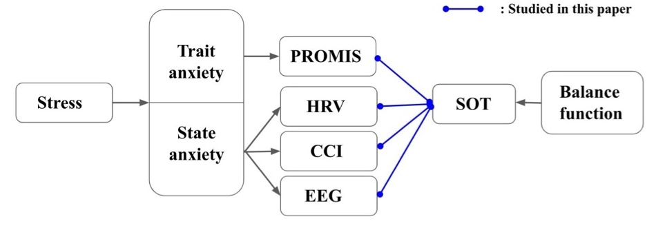
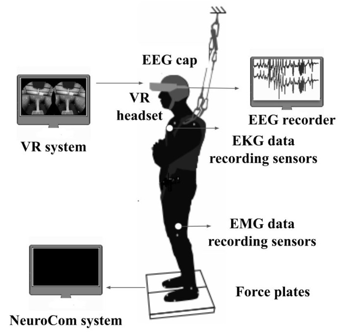
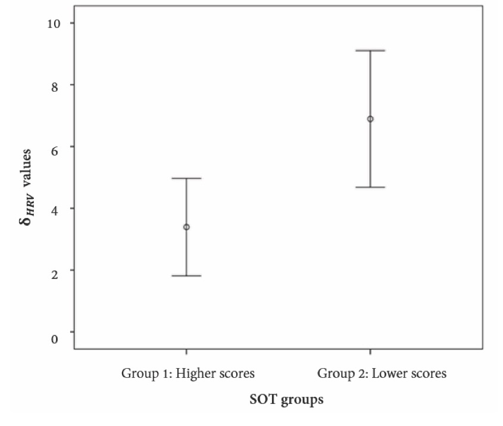
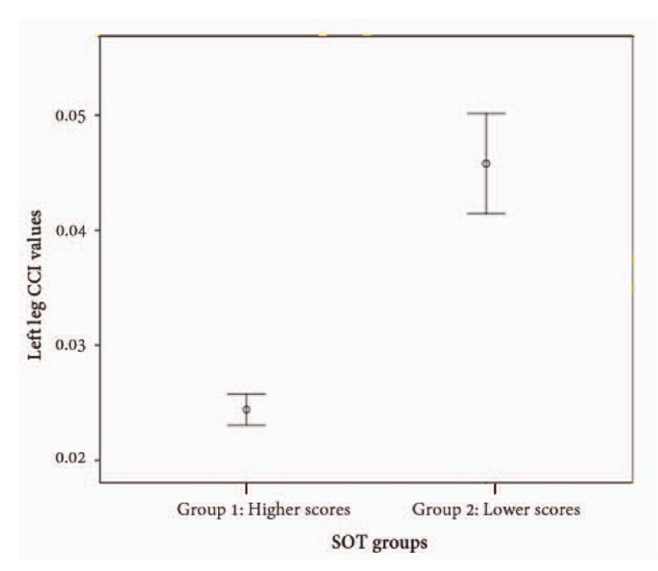
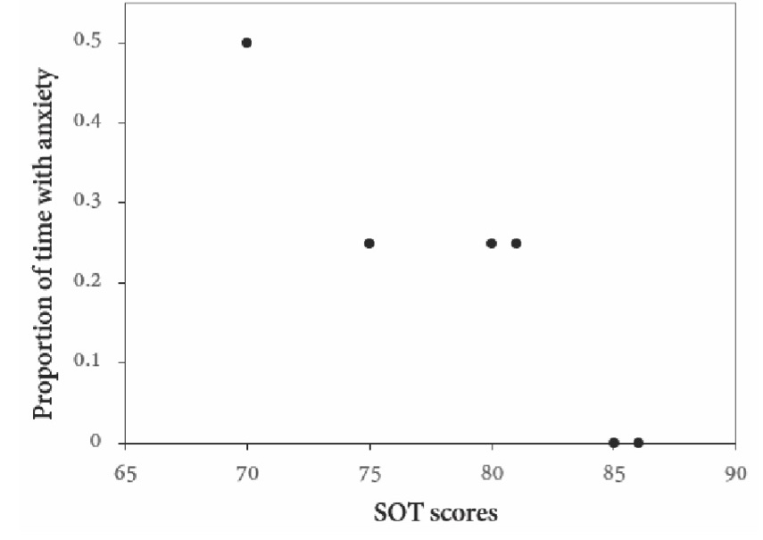

Abstract
We study the interaction between balance function and anxiety in humans via a virtual reality based experimental setup, fundamentally designed to examine postural control and neurological feedback during balance-demanding height and perturbation shifts, while in quiet stance. In this work, sensory organization balance test (SOT) was utilized to quantify the balance function in subjects, and the salient features of the recorded electrocardiogram (EKG), electromyogram (EMG) and electroencephalography (EEG) signals described the subject’s physiological anxiety-related responses. Also, patient-reported outcomes measurement information system (PROMIS) trait anxiety questionnaire was adopted to indicate the self-assessed trait anxiety scores by the subjects. Our statistical analysis indicates that subjects with higher SOT scores encounter a lower heart rate variability during baseline recording relative to the experimental trials and lower co-contraction index of the ankle dorsiflexion (during the experimental trials), suggesting a lower anxiety state. A similar trend was further observed via the self-reported PROMIS questionnaire responses, estimating anxiety experienced in daily life. Additionally, we utilize machine learning to describe the predictability of balance function states via the relative α-band power from the frontal channels of the recorded EEG signals as descriptive features characterizing anxiety. The discussed trends analytically demonstrate the potential for adopting balance function to anticipate anxiety, especially in stressful environments involving postural threats.
Core contributions
- 1Safe postural threatVirtual heights and drops of up to 7.5 m, plus real platform tilts, while people stand still.
- 2Four views of anxietyHeart (HRV), muscles (ankle co-contraction), brain (frontal EEG) and a self-report questionnaire.
- 3Better balance, calmer heartPeople with higher balance scores showed significantly smaller drops in heart rate variability under threat.
- 4Better balance, less stiffeningThey also co-contracted their left ankle muscles significantly less.
- 5Matches everyday anxietyPeople with lower balance scores reported feeling anxious more often in daily life.
- 6Balance from brain signalsFrontal EEG alpha power classified low versus high balance function with an F1 score of 0.83.
Method
1VR heights and balance test
Six healthy young adults first took the sensory organization test (SOT) on a NeuroCom force plate, 18 trials that measure how well a person uses vision, the inner ear and body sense to stay steady. They then stood still in an HTC Vive headset while the virtual platform rose or the floor around it dropped to 2.5, 5 or 7.5 m, each for 30 seconds; in two of four trials, the platform also tilted their toes down by 10 degrees. People above the median SOT score formed the higher-balance group.

2Anxiety markers
From EKG, we detected R peaks and computed heart rate variability; a larger drop from the relaxed baseline to the VR trials signals more anxiety. From EMG on eight lower-leg muscles, we computed the co-contraction index of the ankle, since people stiffen their ankles when afraid of falling. From EEG, after ICA cleaning, we took power in each frequency band from 16 frontal channels. Each participant also completed the PROMIS trait anxiety questionnaire.
Results
1Heart and muscles
- Heart rate variability: the higher-balance group had a significantly smaller change from baseline over all trials and over trials without tilts (p < 0.01), with a trend in tilt trials (p = 0.06).
- Ankle stiffening: the higher-balance group had significantly lower left-leg co-contraction in every condition (p < 0.01).


Show the statistical tests (paper Tables I and II)
| Mann–Whitney test, p-value | All trials | With tilts | Without tilts |
|---|---|---|---|
| Change in heart rate variability | < 0.01 | 0.06 | < 0.01 |
| Left-leg co-contraction index | < 0.01 | < 0.01 | < 0.01 |
2Everyday anxiety
- Lower balance, more anxious days: the lower-balance group reported feeling anxious about 33% of the time versus 8% for the higher-balance group (p = 0.05).

3Predicting balance from EEG
- Two channels again suffice: random forest and AdaBoost using alpha power from F3 and F4 reached an F1 score of 0.83 on held-out data.
- Small sample: with six participants, these are early trends that need a larger study.
| Classifier | EEG features | F1 score (test) |
|---|---|---|
| Random forest | Alpha, F3 & F4 | 0.83 |
| AdaBoost | Alpha, F3 & F4 | 0.83 |
| SVM, linear | All bands, 16 frontal channels | 0.83 |
BibTeX
@inproceedings{sun2019using,
title = {Using Virtual Reality to Examine the Correlation between
Balance Function and Anxiety in Stance},
author = {Sun, Rongyi and Kaur, Rachneet and Ziegelman, Liran and
Yang, Shuo and Sowers, Richard and Hernandez, Manuel E},
booktitle = {2019 IEEE International Conference on Bioinformatics
and Biomedicine (BIBM)},
pages = {1633--1640},
year = {2019},
doi = {10.1109/BIBM47256.2019.8983331}
}Acknowledgments
We would like to thank all the subjects who collaborated with their time and data for the study, research assistants from the Mobility and Fall Prevention Research Lab who assisted with data collection, and JUMP ARCHES for financial support.